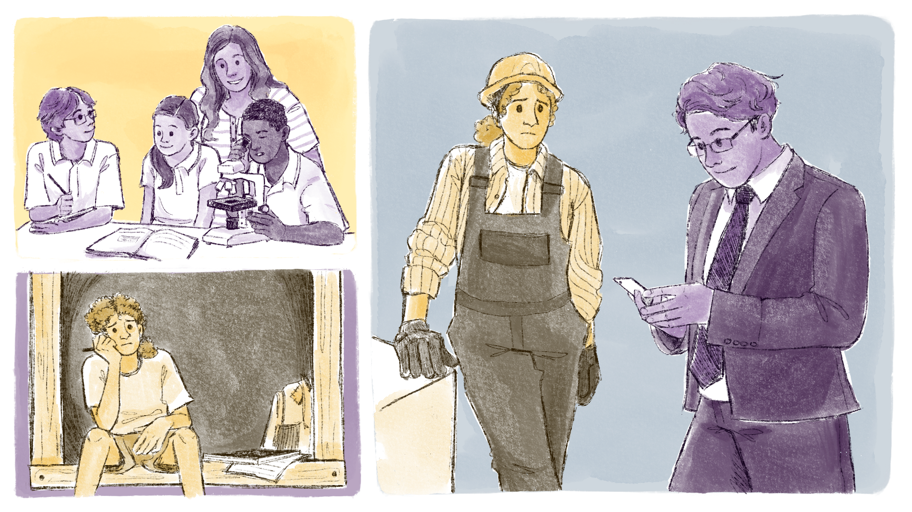

Mas, afinal, o que é o ensino integrado?
Em uma posição contrária à formação aligeirada e superficial, com vistas à superação do dualismo estrutural da educação brasileira, temos a formação integrada, que visa restabelecer as relações entre o saber e o fazer com base na totalidade dos elementos de produção da vida em sociedade.
Como já abordado no início do capítulo, a noção de integração na formação humana expressa a articulação das dimensões sociais do trabalho, da ciência e da cultura. A concepção de integração curricular orienta, assim, a complementaridade entre a educação geral e a educação profissional.
A dualidade educacional, que impõe a cisão entre a formação propedêutica destinada à continuidade dos estudos e a formação técnica operacional, traz impressa a desigualdade social produzida pelo modo de produção capitalista. O sistema de ensino revela seu caráter classista ao reproduzir a divisão social do trabalho, configurada na sociedade e nascida na esfera da produção social. O privilégio de uma minoria dirigente e detentora dos meios de produção representa a espoliação de uma maioria submetida à subalternidade dessa elite.

Título: O caráter classista no sistema de ensino
Fonte: Prosa (2024o).
Para Gramsci, a relação entre escola e trabalho e, por conseguinte, entre a formação geral e formação profissional deve estar em interação e atender aos interesses da classe trabalhadora, como preconiza seu conceito de escola unitária. Trata-se de estabelecer uma formação integral/omnilateral da qual emerge o conceito marxiano de politecnia.
Recomendamos o vídeo da socióloga e professora Lucília Machado, em que ela discute a importância da politecnia na atual conjuntura educacional do Brasil.
A observação de Marx a respeito do necessário desenvolvimento das dimensões intelectual, física e tecnológica (formação integral do ser humano ou formação omnilateral) resulta como antídoto à violência submetida às crianças e jovens nas fábricas capitalistas.
Ao defender a formação humana integral (educação do corpo, educação intelectual e educação tecnológica), segundo Moura, Lima e Silva (2015), Marx lança luz para uma formação elevada. O objetivo estratégico é a superação da sociedade burguesa, colocar a educação a serviço do homem sabendo que, para a efetivação plena da formação integral, é preciso que
[...] os trabalhadores voltem a ter o domínio sobre o conteúdo do próprio trabalho e, dessa forma, tenham melhores condições para enfrentar a contradição entre capital e trabalho, visando à superação do modo de produção capitalista, pela via do aprofundamento de suas contradições internas.
A complexidade que envolve a temática “O ensino integrado e a efetivação do trabalho como princípio educativo na EPT” é, justamente, a compreensão da necessidade de apreensão histórica da construção da relação entre trabalho e educação e, também, de como a sociedade constrói a divisão entre trabalho intelectual e trabalho operacional.
Ao longo da história, a educação brasileira apresenta, portanto, tensões e controvérsias – agravadas com o surgimento do capitalismo neoliberal. As transformações sociais almejadas, de modo a superar inúmeros fatores que promovem a intensificação da divisão do trabalho e as decorrentes desigualdades entre as classes, passam necessariamente pelo enfrentamento das contradições entre capital e trabalho e pela efetivação do papel do ensino integrado como possibilidade de superação e de construção de uma nova realidade.
Partimos da determinação de que, para que o processo de “travessia” se efetive, é necessário haver a conciliação entre as ideias e as bases materiais em um movimento dialético entre infraestrutura e superestrutura.
.png)
Título: Movimento dialético entre infraestrutura e superestrutura no marxismo
Fonte: Prosa (2024p).
- A flexibilização dos projetos e das práticas pedagógicas
Segundo Kuenzer, é preciso ponderar sobre o que se entende por flexibilização, pois “[...] estar incluído [na cadeia produtiva] a partir de uma dada qualificação não assegura que não se esteja excluído em outros momentos e vice-versa, dependendo das necessidades do sistema produtivo. Portanto, não é a presença ou ausência de qualificação, mas as demandas do processo produtivo que combinam diferentes necessidades de ocupação da força de trabalho, a partir da tarefa necessária à realização da mercadoria” (Kuenzer, 2007, p. 1168). - A divergência de Nosella (2011) quanto à discussão sobre a formação humana integral com base no trabalho como princípio educativo
Para o autor, a precocidade da determinação profissional dos jovens, filhos da classe trabalhadora, na escola média brasileira é um fator de preocupação. Nosella questiona se não se está desconsiderando a liberdade da maioria desses jovens com idade prematura para decidir por uma formação profissional. Diferentemente, os jovens da classe dirigente teriam um tempo mais alargado para a definição profissional. Nosella traz, assim, a proposição de que sejam adotadas concepções e práticas pedagógicas para o fortalecimento do ensino médio unitário e não profissionalizante para todos. - A disputa política direta com o capital e os reveses dessa disputa
Por vezes, resultam em retrocessos significativos aos trabalhadores, como foi o caso que discutimos anteriormente sobre a separação entre os ensinos profissional e propedêutico, em atendimento às exigências do mercado.